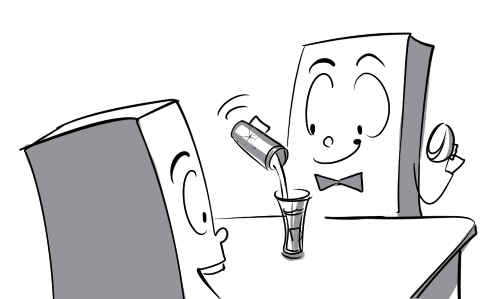
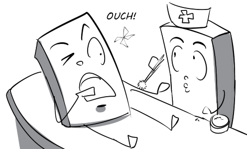

acronym: MD is an acronym for Doctor of Medicine.
adverse: The football match was cancelled because of adverse weather conditions.
affect: Cold weather affects the severity of his flu.
altitude: The airplane is flying at an altitude of 5000 meters.
amnesia: David is suffering from amnesia, which is why he doesn’t recognize his wife.
ancestor: Ancestor worship is a beautiful tradition of Vietnamese.
artifact: The ancient artifact was sold at record high prices at yesterday's auction.
baron: Mr. Thomas is the baron of the jewelry industry.
blaze: Many hectares of forests were destroyed by the fierce blaze.
blight: Their sudden deaths cast a blight on their little son's mental state.
bogus: Peter is very shocked to find out that the money they gave him is bogus.
bombard: The troops have bombarded the city heavily for several days.
boon: This compass will be a boon to you if you are lost in the forest.
breadth: Andy uses a tape measure to measure the breadth of this table.
breakthrough: The scientists have made a breakthrough in the search for a cure for AIDS.
burrow: Moles live in underground burrows and eat roots, grubs and earthworms.
canine: My son is playing with his canine friend in the garden.
canister: You have to be very careful when carrying these gas canisters.
captive: The president's son was taken captive by the rebels.
cardiac: The old man suffered cardiac failure when he was walking his dog.
cascade: The beautiful cascade of water falls down the cliff.
causative: Smoking is a causative factor in lung cancer.
cement: The mason uses cement to stick bricks together.
certified: This certified doctor has earned the trust of many patients.
chameleon: The colorful chameleon is catching a fly with its tongue.
cherish: Peter cherishes ambitions of becoming a CEO like Steve Jobs.
convert: This turbine can convert energy from moving water into mechanical energy.
convey: I asked my friend to convey my message to Daisy because I was too shy.
corporate: Charitable activities will help us improve our corporate identity.
corpse: The police found a corpse in the forest this morning.
costume: Peter went to the Halloween party in a vampire costume.
defuse: David trembled with fear when he tried to defuse the bomb.
degrade: The T-shirt is degraded by the tear in it.
demise: The boss announced the demise of his company to all the employees.
denounce: All my classmates denounced my cheating on the test.
deranged: The mentally deranged man is singing very loud on the street.
designate: The coach designated me as the leader of the soccer team.
detect: The doctor examined his patient to detect if he had cancer.
devoid: The city is devoid of inhabitants because of the epidemic.
dilute: My father dilutes the paint with water to make it lighter.
disdain: I don't want to work here anymore because all my colleagues treat me with disdain.
drought: Crops have failed because of drought.
embezzle: He embezzled $100,000 of public funds to buy a new car.
emission: The light emission of the flashlight is really strong.
encrypt: He encrypted his personal information so that nobody can access it.
engulf: His car was engulfed in snow after the snowstorm.
enrage: Mrs. Thompson was enraged at her son's bad exam results.
enrich: David reads a lot of books to enrich his knowledge.
enthusiast: Peter is such a soccer enthusiast. He never misses any soccer match.
entrap: The thief found himself entrapped inside a bamboo basket.
envoy: The Vietnamese envoy is presenting his opinion at the UN conference.
executor: Mr. Thomas appointed me executor of his will.

expenditure: My company will pay all the work-related expenditures.
fertility: The crops grow really well thanks to the fertility of the soil.
flaunt: Mary is flaunting her new expensive phone.
fleet: A fleet of 20 ships is sailing across the Atlantic ocean.
flippant: Peter made a flippant comment on the new secretary.

fluid: The bartender is pouring a red fluid into the glass.

foremost: Daisy is one of the foremost students in my class.
formidable: Mr. Thomas is very scared of his formidable wife.
formula: The formula of ammonia is NH3.
fossil fuel: Coal is one of the most common fossil fuels.

frigid: He greeted his unexpected guests with a frigid smile.
groan: Peter groaned with pain when I applied alcohol on his wound.

hiatus: The conference resumed after a two-hour hiatus.
hind: There is a wound on the hind leg of the dog.
hoodlum: The hoodlum asked me to give him my wallet.
household: Being the eldest child, I help my parents with the household chores.
hurtle: I was scared to death when a truck came hurtling towards me.
hybrid: This car is a hybrid of a gasoline car and an electric car.
incidentally: The precious antique was discovered incidentally by a beggar.
induction: We are attending the induction of new employees in the conference room.
ingredient: Mrs. Green reads the ingredients list on packaged foods very carefully.
inhabitant: Foreign tourists are welcomed warmly by the inhabitants of the village.
inject: The nurse injects me with rabies vaccine after I was bitten by a dog.
prosecutor: The prosecutor is arguing that the defendant is guilty of the murder.
regime: All the people have lived unhappily under the brutal regime for a long time.
remedy: The love of his girlfriend is the best remedy for his disease.
remnant: The stumps are remnant of huge forest which once covered this area.
repetition: The bodybuilder is performing multiple repetitions of a heavy weight.
retinue: The famous actress is walking on the street with a large retinue of bodyguards.
revere: The director is revered by all the employees for his leadership skills.
rigid: I cannot stand my school's rigid rules anymore.
rim: There is a fly on the rim of the cup.
ritual: The priest is carrying out all the exercises of the ritual.
rotate: The earth rotates on its axis once every 24 hours.
rough: The path from the foot of the mountain to its peak is very rough.
sexist: The sexist manager is always biased towards male employees.
shadow: The giant tree shadowed the place where we camped.
shatter: I dropped the mirror and it shattered into pieces.
status: This businessman has a high social status in my country.
skyward: Everybody applauded when the spaceship soared skyward.
slender: The model has a slender figure thanks to her low-carb diet.
smattering: There is only a smattering of people in the theater right now.
stationery: I went to the bookstore to buy some stationery.
theatrical: In a theatrical gesture he put his hands in the air and cried Why?.
therapist: The therapist is asking me some questions about my childhood.
transaction: China has attained the top position in the world of annual gold transaction.
titter: My friend tittered at my new haircut.
unveil: Mercedes unveiled their latest models at the automobile this morning.